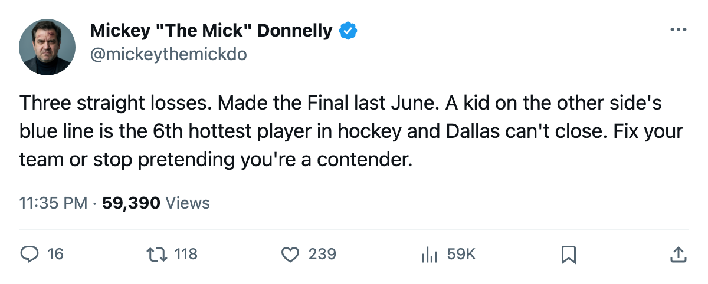
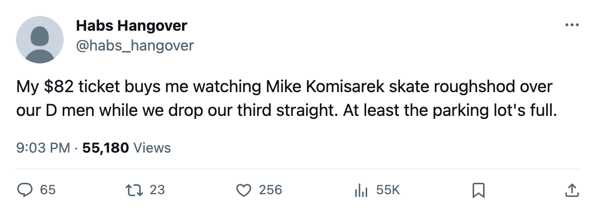

THEY MADE THE FINAL. $1.61M A POINT. NOW THEY CAN'T BEAT MONTREAL.
Three straight losses for the Stanley Cup Finalists. A 27-point Canadiens club visits on a three-game winner. The coach has no answer on the sheet.
 Mickey "The Mick" DonnellyColumnist, ex-goalie · The Penalty Box
Mickey "The Mick" DonnellyColumnist, ex-goalie · The Penalty BoxThree straight losses. That is  Dallas Stars's standing on a Sunday night in December. The Stanley Cup Finalists. The club that turns $58.02M into 36 points at $1.61M a pop, third-cheapest per point in a 30-club league. Third in the West. Fourth overall. And they can't put away the Canadiens in their own building.
Dallas Stars's standing on a Sunday night in December. The Stanley Cup Finalists. The club that turns $58.02M into 36 points at $1.61M a pop, third-cheapest per point in a 30-club league. Third in the West. Fourth overall. And they can't put away the Canadiens in their own building.
The first meeting went to overtime and  Montreal Canadiens took it, 4-3. Tonight they're back in Texas for game two, and Dallas still hasn't closed a game in three tries. Fourteen wins, seven regulation losses, four overtime losses. Thirty-six points. You can dress that up as a playoff position. You can't dress it up as a contender when the three most recent entries in the win column are zeros.
Montreal Canadiens took it, 4-3. Tonight they're back in Texas for game two, and Dallas still hasn't closed a game in three tries. Fourteen wins, seven regulation losses, four overtime losses. Thirty-six points. You can dress that up as a playoff position. You can't dress it up as a contender when the three most recent entries in the win column are zeros.
The building is fine. 16,912 at $82 a head. $51.75M in revenue, $25.02M in profit. The front office is profitable, the seats are full, the payroll is tight. Every dollar is accounted for and every dollar produces more points than it does in 26 other cities. You cannot blame the owner. You cannot blame the ticket price. You cannot blame the empty blue seats that don't exist here.
You blame the bench.
Montreal comes in at $54.89M, $2.03M a point, 9 wins and 9 losses and 3 overtime losses. Twenty-seven points. Five fewer wins than Dallas. Four fewer points. Four and five on the road. That is not a club that beats a Stanley Cup Finalist in regulation. That is not a club that should make Dallas look like the 23rd team in this league for three games running.
Mike Komisarek81 sits +10 on the Bureau's Development Index. Twenty-three years old, 24 games, 21 points, an 87 overall grade riding on a 77 base. He is the 6th-biggest riser in the entire league. The first time he skated against Dallas, they lost in overtime. Tonight he skates in their building and their blue line has to stop him.
What does Dallas put up against an 87-grade defenseman in a +10 form spike? Mike Matteucci64 sits -4 on the Index. Thirty-five years old, 64 overall, still on the roster. A man who has dropped below the Book's base is supposed to be your depth, not your answer. You do not make a Final by counting on a 35-year-old in freefall to guard a 23-year-old who is the hottest young defenseman in hockey.
The coach sat behind his podium and watched three losses pile up and did not fix it. That's his name on the schedule card. The room is 93.7 on the Bureau's Morale Scale, 13th in a 30-club league. Nobody's quitting, nobody's tanking. They just keep losing games they should win, and the slide gets longer and the excuses stay the same.
Reimer's spreadsheet loves Dallas. Third-best per point, $25.02M in profit, a Cup Final run last June. The spreadsheet is right about the front office. It doesn't have to watch three straight losses from the press box. It doesn't see a 23-year-old take a game to overtime in your building and then come back for more.
Fix it or the spreadsheet gets a lot less interesting in April.

